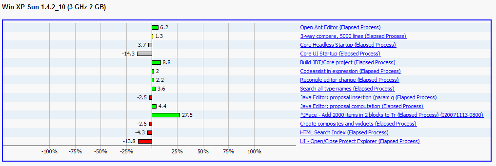
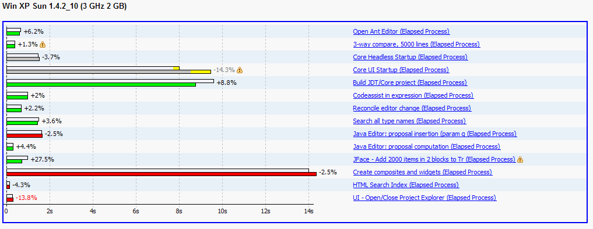
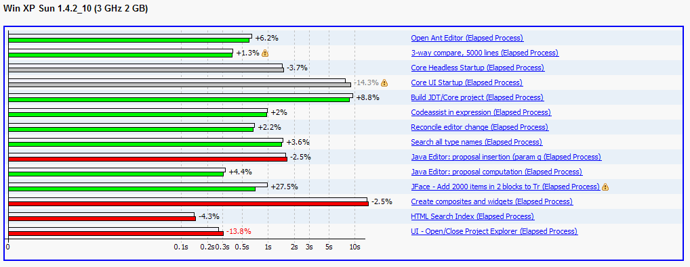
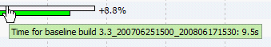
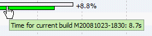
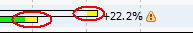
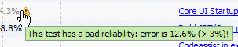
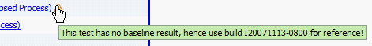

Table of contents
Since 3.5, it's possible to see results in fingerprints with three different
kinds of scale.
The X axis represents percentage of the variation vs. the given baseline
This is the way fingerprints were displayed since the beginning:

- Red bar means a regression, even if it's less than the 10% threshold.
- Green bar means an improvement
- Gray bar means an 'explained' regression.
For these scales, the X axis represents the duration time of the test.
The colors meanings are the same than for the percentage scale.
These kind of graphs give a better idea of time duration for each test.
Typically use linear scale if you want to see the tests relativeness for all the component tests:

But the logarithmic scale is more appropriate when there are a strong duration differences between tests, hence makes short duration tests easier to survey:

Each test have two bars: the former is white and shows the baseline result, the latter is colored (red, green or gray) and shows the current build result.
The variation between the baseline and the build is displayed as a percentage on top of both bars.
Tips are almost the same for linear and logarithmic scales:
 |
Flying over a bar displays its time value: |
|
 |
|
 |
|
|
For linear scale only, when the error on the time result is noticeable,
then the measurement uncertainty is shown in yellow at the end of the bar: |
|
 |
|
|
A performance regression may sometimes have a known good reason.
In this case, the current build bar is grayed and flying over it also shows the given explanation: |
|
 |
|
|
Test result may have big error which can make the test result not fully reliable.
In this case, a warning icon is shown after the variation value and flying over it gives the offending error value: |
|
 |
|
|
Test may have no result for the used baseline, hence the first available build is used as a reference.
In this case, a warning icon is shown after the scenario title and flying over it gives the build ID used to compute the variation: |
|
 |